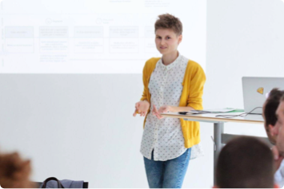
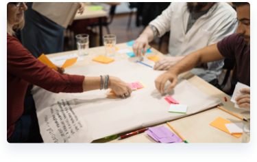
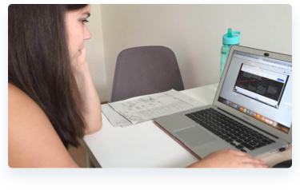
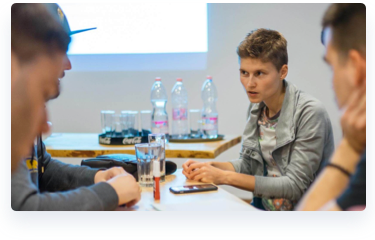

3-day UX design process training tailored to your company needs.
During the 3-day UX trainings, our designers and researchers come to your company to train your team and share our experience working with clients like HBO and Wizz air.
The course is taught in our office or your location and fully customized for your company. Your team will work side-by-side with world-class UX designers.
Our UX Training schedule is available below on the page for your convenience and fully displays daily course program. By bringing UX mindset into your organization, you can upskill your team for better and faster results.
The three-day UX/UI training suits you if:
Brief information about our UX training:
We will teach you how to systematically learn about users and how to apply collected data in a design process.
Get to know how users navigate through your website and build a powerful journey to improve online customer experience.
Learn prototyping and testing to discover the best design layout that would be clear for your users.
Paper-based, low/high fidelity wireframes, visual hierarchy, intro to Axure and much more.
Get to know your users better through fieldwork, A/B tests, interviews, five-second test and more.
Create a powerful message with the right words to make your users understad your business and value proposition.
3-day UX design process training tailored to your company needs.
hello@uxstudioteam.com
+36 20 367 42 88
During the three-day training, we teach you UX design processes as well as research methods. Prototyping and user testing with a design software are also part of this training.
Eventually, you wil be able to lead your own UX project.
The first day involves acquiring a basic knowledge of the UX approach and methods. In this spirit, we look at the product design process stages.
We discuss the basics of user research, interview and test planning, user personas and journeys. Then come the concepts of the jobs to be done and value proposition, along with goal-setting and process planning.
Here comes the very complicated schedule for day 1
During the second day we review the user journeys and set effective product feature prioritization.
Finally, we teach you how to create a product prototype, first on a paper and later on with the help of a prototyping software.
Here comes the very complicated schedule for day 2
Once the prototype is ready, we start preparing to the user tests by writing the UX interview script together. After we acquired user insights we help you to review the prototypes and discuss the next steps together.
Here comes the very complicated schedule for day 3
Usability is the key to a great customer experience. As a UX company, this is our number one priority. Mid and large-sized companies can greatly benefit from an external team’s view on current processes and tasks. UX experts can provide additional insights on how to improve your product's design and performance.
Whether you want to learn about UX or you need product design services let us help with your challenge.
hello@uxstudioteam.com
+36 20 367 42 88
Sales ppl come here
Form comes here